Catalog Services
The Catalog Service for the Web (CSW) is an OGC Standard used to publish and search geospatial data and related metadata on the internet. It describes geospatial services such as Web Map Service (WMS) and Web Map Tile Service (WMTS).
In MapStore the Catalog offers the possibility to access WMS, WFS, CSW, WMTS and TMS Remote Services and to add the related layers to the map. By default, as soon as a user opens the Catalog, a CSW a WMS and a WMTS Demo Services are available, allowing to import layers from the GeoSolutions GeoServer. The user can access the Catalog with a click on the button from the Side Toolbar. As soon as you open it, the first display is like the following:
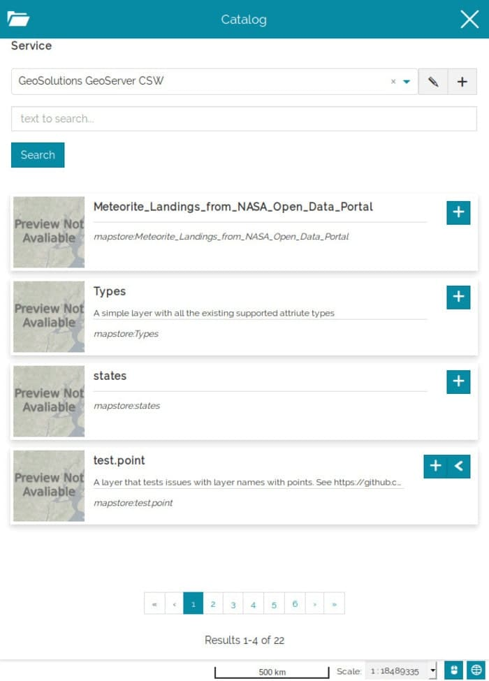
Adding Layers from Remote Services
In order to add a layer, the user can first of all open the catalog and choose from the following dropdown menu the Remote Service from where the layer is going to be added:
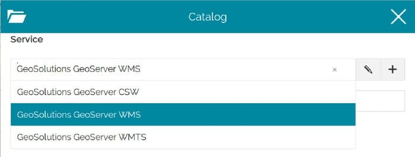
Once the Remote Service is set, it is possible to search the desired layer by typing a text on the search bar:
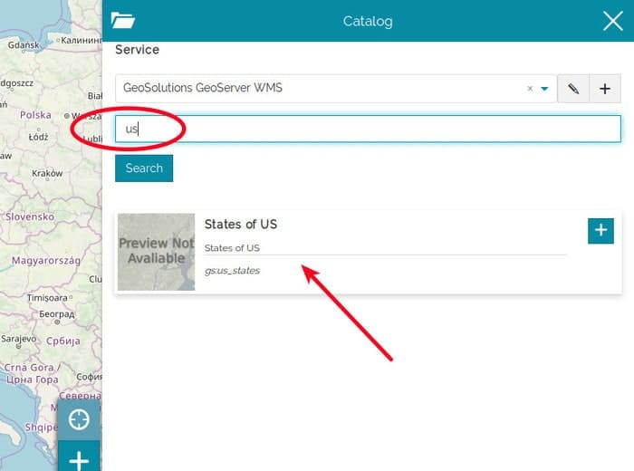
By clicking on the button, the layer is finally added to the TOC and rendered to the map viewer:
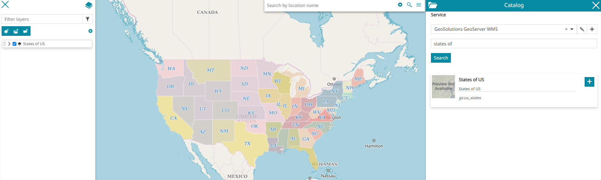
Note
For those layers which have long descriptions or long metadata information, the content is truncated in order to fit the Layer Card size. In order to access the complete information, the user can expand the card using the button:
Managing Remote Services
MapStore allows also to add new Remote Services to the map project (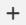) or Edit/Remove the existing ones (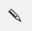).
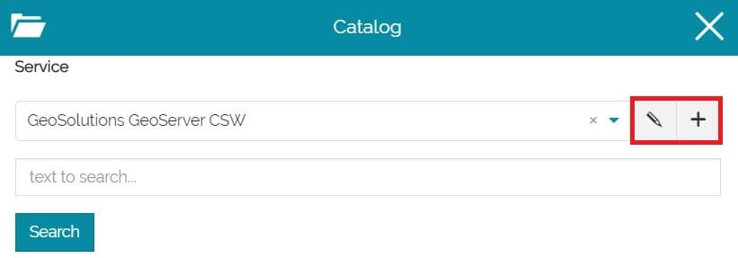
The adding/editing process is very similar and the only difference is that editing an existing Service the input fields will be already filled with its settings, while adding a new one all the fields will be empty. Moreover only editing an existing Service, it will be possible to remove it from the Services list.
Editing an existing Service, for example, the first display is the following:
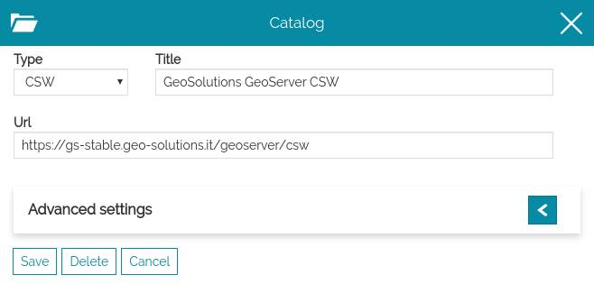
From here the user is allowed to set the Service options, that can be divided into:
-
General settings
-
Advanced Settings
Once the options are properly set, it is possible to the Service. If the user wants to discard the edits, instead, there's the button. An existing Service can finally be removed from the Services list through the button (this option is not available creating a new Remote Service).
General settings
The general settings are three mandatory fields that each Remote Service needs to have:
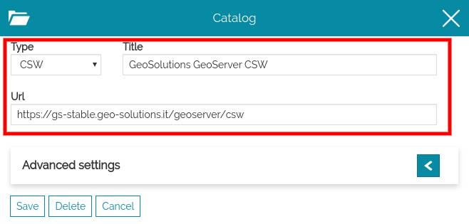
In particular:
-
Url: the URL of the remote source service
-
Type: the type of the remote source service (between WMS, WFS, CSW, TMS, WMTS and 3D Tiles)
-
Title: the title to assign to the catalog. This text will be used in the service selection dropdown menu for this service.
Advanced settings
The Advances settings section opens by clicking on the icon:
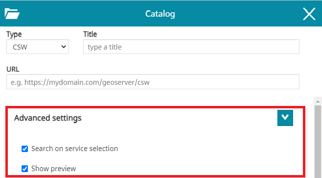
The content of Advanced settings depends on the catalog type, but some options are common to all the services types:
-
Search on service selection that allow to enable/disable the automatic loading of the catalog records when the user opens that Service
-
Show preview that can show/hide layers thumbnails in Catalog
Catalog Types
CSW Catalog
The Catalog Service for the Web (CSW) is an OGC Standard used to publish and search geospatial data and related metadata on the internet. It describes geospatial services such as Web Map Service (WMS), Web Map Tile Service (WMTS) and so on... MapStore actually supports only the Dublin Core metadata schemas. ISO Metadata Profile is not supported yet.
In general settings of CSW service the user can specify the title to assign to this service and the URL of the service.
Note
If the CSW service, responds with metadata records that can hold more than just one type of OGC service (WMS and WFS are currently supported for this), MapStore allows the user to choose from which service the layer should be added to the TOC. An example can be the following:
Advanced Settings
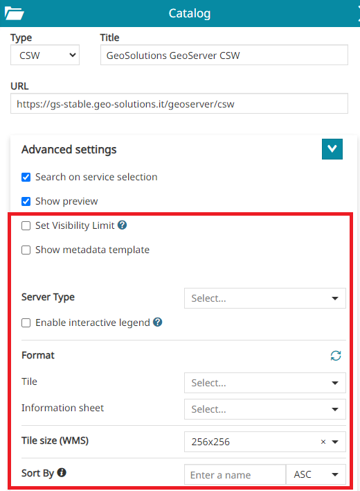
- Server Type: to specify the server type of WMS online resources referred by metadata exposed by the CSW service URL. Possible options are two:
GeoserverorNo Vendorwhich can be for example MapProxy, MapServer or other.
Note
If the No Vendor is set, then MapStore will not use any vendor option supported only by GeoServer in the OGC requests where this source is involved.
-
Interactive legend: if checked, allows to set by default the legend filter when a layer is added to the map from this source as described in Layer Settings.
-
Format: to assign the default Tile format for the layers added to the map (e.g.
png,png8,jpeg,vnd.jpeg-png,vnd.jpeg-png8orgif) and to define the default Information sheet format for the layers added to the map (text/plain,text/html,application/jsonorapplication/geo+json). The list of available formats is automatically retrieved from the ones supported by the WMS server and can be also manually fetched through the Fetch supported formats button when necessary.
button when necessary.
Note
The Tile and the Information sheet configured through this option will be automatically used for all layers loaded from the involved catalog source (if not configured the default Tile used is image/png and the default Information sheet used istext/plain). For layers already loaded on the map, it is possible to change the format through the Layer Settings tool as usual.
-
Tile size (WMS): it represents tile size (width and height) to be used for tiles of all layers added to the map from the catalog source (
256x256or512x512). For layers already loaded on the map, it is possible to change the tile size through the Layer Settings tool as usual. -
Sorty By: to retrieve the catalog result in ascending or descending order, it is possible to enter the
propertyNameof the metadata attributes and select the desired sort type (ASCorDESC). -
Set Visibility Limit: if checked and scale limits present in the WMS Capabilities (eg. MinScaleDenominator and/or MaxScaleDenominator), these will be automatically applied to the layer settings when a layer is added to the map from this source.
-
Show metadata template: this can be enabled when the user wants to insert in the layer description a text with metadata information
Warning
The Metadata Template function is available for CSW Services only.
Metadata templates
In order to better understand this function, let's make an example supposing to edit the GeoSolutions GeoServer CSW service:
-
Change the Format of the image that will be rendered on the map (
png,png8,jpeg,vnd.jpeg-png,vnd.jpeg-png8orgif) for layers belonging to the selected source -
Show metadata template can be enabled when the user wants to insert in the layer description a text with metadata information
Enabling the Show metadata template option appears a text editor through witch it is possible to insert the custom metadata information for that service. In order to dynamically parse each layer's metadata value the user can insert the desired properties name with the format ${property_name}:
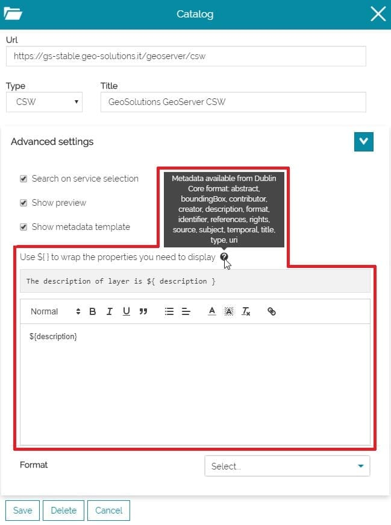
In this case it is possible to add a text like the following, in order to present desired metadata properties:
1 2 3 4 5 6 7 8 9 10 11 12 13 14 15 16 17 18 19 20 21 22 23 24 25 26 27 28 29 | |
Inserting this text and saving, the result should be that each layer will show its properties in catalog with the format we set:
Note
If some metadata are missing, the server response will be source Not Available
Static Filter and Dynamic Filter
From the Advanced Settings of the CSW catalog the user has the possibility to configure a Static Filter and a Dynamic Filter to customize the search request.
In order to better understand this function, let's make an example supposing to edit the GeoSolutions GeoServer CSW service:
- From the Static Filter text area it is possible to insert the custom filter for that service.
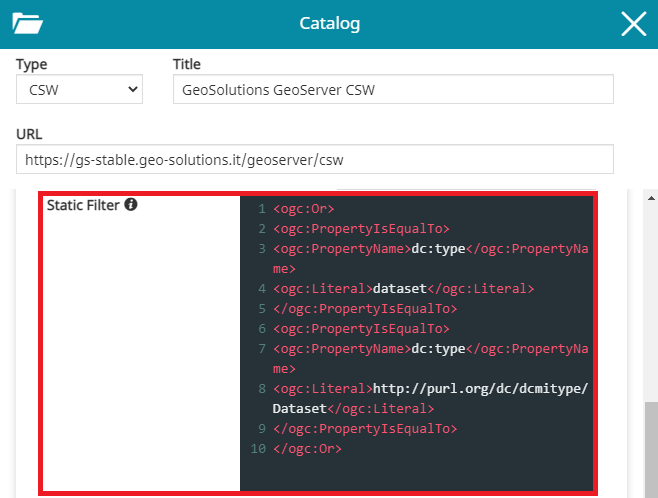
In order to present desired Static Filter configuration, it is possible to add a text like the following:
1 2 3 4 5 6 7 8 9 10 | |
Inserting this text and saving. The filter is applied, even in empty search.
- From the Dynamic Filter text area it is possible to insert the custom filter to applied in AND with Static Filter. The template is used with ${searchText} placeholder to append search string
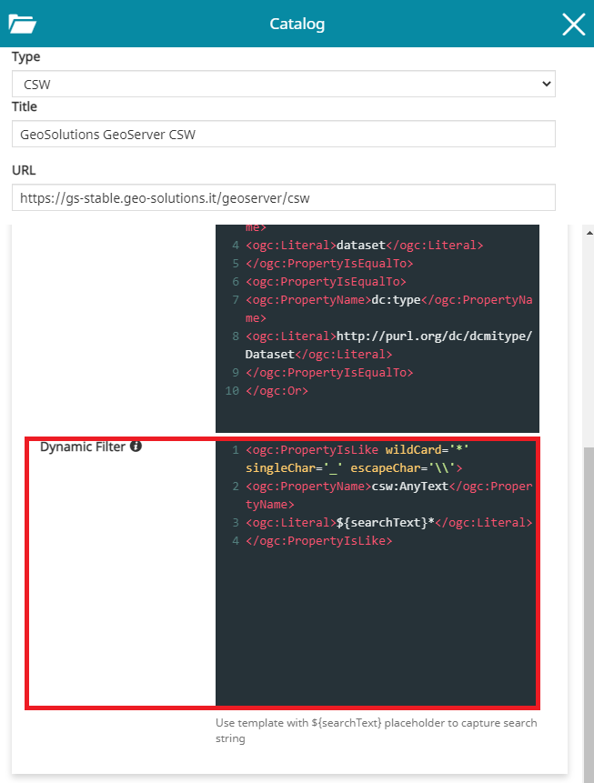
In this case it is possible to add a text like the following:
1 2 3 4 | |
Inserting this text and saving, the filter is applied when text is typed into the service search tool.
WMS/WMTS Catalog
WMS and WMTS Services are OGC Standards protocol for publishing maps (and tile maps) on the Internet. The user can add these kind of services as catalogs to browse and add to the map the layers published using these protocols.
In General Settings the user can set the title he wants to assign to this service and the URL of the service to configure the service and its URL.
Advanced Settings
In addition to the standard options, only for WMS catalog sources, through the Advanced Settings the user can configure also the following options:
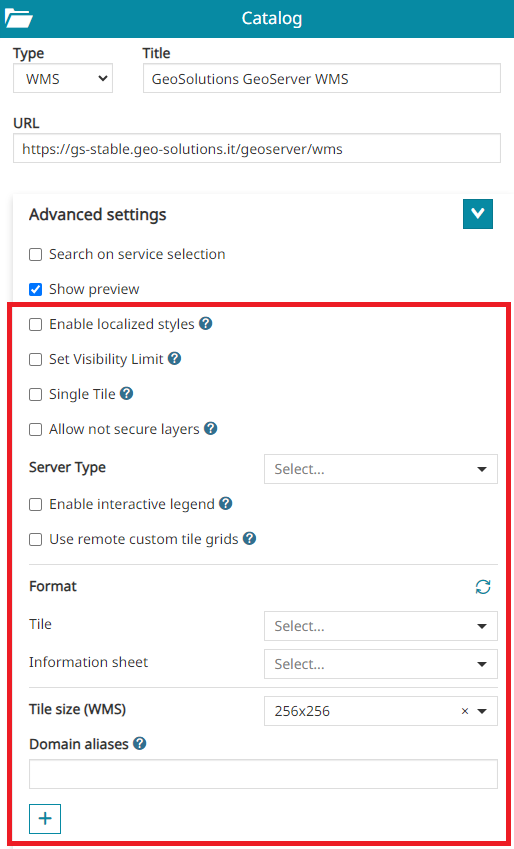
-
Localized styles (only for the WMS service) if enabled allows to include the MapStore's locale in each GetMap, GetLegendGraphic and GetFeatureInfo requests to the server so that the WMS server, if properly configured, can use that locale to:
-
Use localized lables for Tiles in case of vector layers (the layer's style must be properly configured for this using the ENV variable support)
-
Produce a localized layer legend in case of vector layers (the layer's style must be properly configured to use the Localized tag for rule titles)
-
Produce a localized output for GetFeatureInfo requests (the freemarker template need to be properly configured to retrieve the locale from the request)
-
Enabling that option, all layers added to the map from this catalog source will be localized as described above (it is possible to tune again that setting for each single layer by opening the Layer Settings in TOC).
-
Set Visibility Limit: available only for WMS layers coming from CSW or WMS catalog sources type. If checked and scale limits present in the WMS Capabilities (eg. MinScaleDenominator and/or MaxScaleDenominator), these will be automatically applied to the layer settings when a layer is added to the map from this source
-
Single Tile (only for the WMS service): if checked, the layers loaded from the involved catalog source are rendered as a single tile. For layers already loaded on the map, it is possible to disable this option through the Layer Settings tool as usual.
-
Allow not secure layers: if enabled allows the unsecure catalog URLs to be used (http only). Adding layers from WMS sources with this option active will also force the layer to use the proxy for all the requests, skipping the mixed content limitation of the browser.
-
Server Type: to specify the server type of the used WMS service URL. Possible options are two:
GeoserverorNo Vendorwhich can be for example MapProxy, MapServer or other.
Note
If the No Vendor is set, then MapStore will not use any vendor option supported only by GeoServer in the OGC requests where this source is involved.
-
Interactive legend: if checked, allows to set by default the legend filter when a layer is added to the map from this source as described in Layer Settings.
-
Use remote custom tile grids: if checked, allows to set by default the custom tile grid caching strategy when a layer is added to the map from this source as described in Layer Settings.
-
Format: to define the default Tile format for the layers added to the map (
png,png8,jpeg,vnd.jpeg-png,vnd.jpeg-png8orgif) and to define the default Information sheet format for the layers added to the map (text/plain,text/html,application/jsonorapplication/geo+json). The list of available formats is automatically retrieved from the ones supported by the WMS server and can be also manually fetched through the Fetch supported formats button when necessary.
Note
The Tile and the Information sheet configured through this option will be automatically used for all layers loaded from the involved catalog source (if not configured the default Tile used is image/png and the default Information sheet used istext/plain). For layers already loaded on the map, it is possible to change the format through the Layer Settings tool as usual.
-
Tile size (WMS): it represents tile size (width and height) to be used for tiles of all layers added to the map from the catalog source (
256x256or512x512). For layers already loaded on the map, it is possible to change the tile size through the Layer Settings tool as usual. -
Domain aliases: available only for WMS catalogs type. This option is used to improve the performances of the application for tiled layer requests when multiple domains can be defined server side for the configured catalog source in MapStore (domain sharding). The user can configure multiple URLs referring to the same WMS service through the Add alias
 button. Useful information about other kind of performance improvements can be found in the MapStore online training documentation.
button. Useful information about other kind of performance improvements can be found in the MapStore online training documentation.
TMS Catalog
The Tile Map Service (TMS) specifications include some not official/not standard protocol for serving maps as tiles (i.e. splitting map up into a pyramid of images at multiple zoom levels). MapStore allows to add to the map the following services providers:
- Custom TMS service, specifying the URL template for the tiles.
- TMS 1.0.0 , setting the URL
- Select from a list of known TMS services, with all the variants.
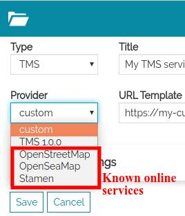
Select provider for TMS. The list of providers contains "custom", "TMS 1.0.0" and other resources
Note
Since some of these services are not standard, using them in different CRSs may cause problems. Therefore, keep in mind that changing CRS can cause problems when these levels are on the map.
Custom TMS
Selecting the custom provider the user can insert the tile URL template manually. The URL template is an URL with some placeholder that will be replaced with variables. The placeholder are identified by strings between brackets. e.g.: {variable_name}.
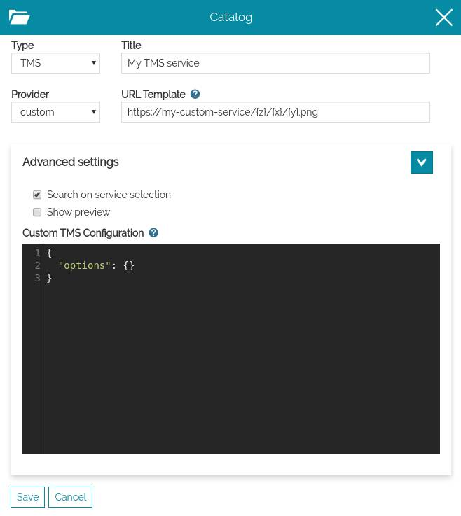
Edit a custom TMS
Allowed placeholder are:
{x},{y},{z}: coordinates of the tiles{s}: subdomains, this provides support for domain sharding. By default this is["a", "b", "c"]. User can customize the default by adding options.subdomains.
example:
{
"options": {
"subdomains": ["a", "b", "c", "d", "e"]
}
}
When the user saves this custom catalog service and clicks on search, he will see only one result, that can be added on the map: variants are not currently sopported in MapStore for this provider type.
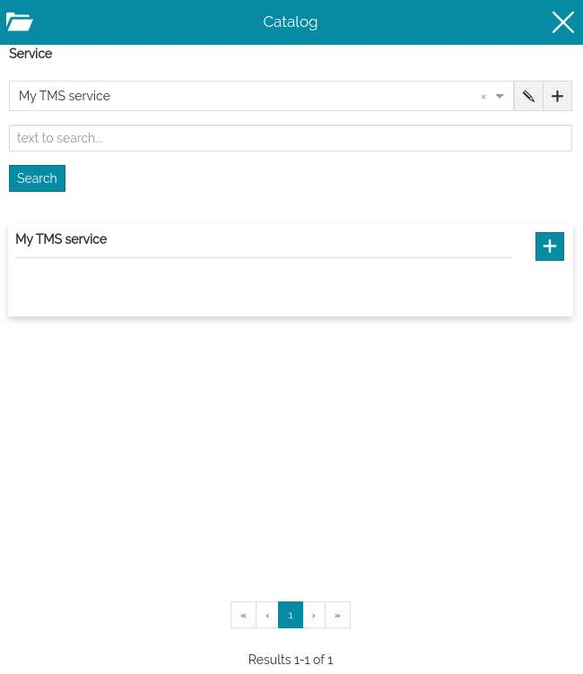
Browse custom TMS service. It contains only one result
Sample custom
url: https://{s}.tile.opentopomap.org/{z}/{x}/{y}.png
Sample custom with advanced options
url: https://nls-{s}.tileserver.com/nls/{z}/{x}/{y}.jpg
{
"options": {
"subdomains": [
"0",
"1",
"2",
"3"
]
}
}
TMS 1.0.0
Selecting the "TMS 1.0.0" provider the user can insert the URL of the Tile Map Service (see TMS Specification). For instance, in GeoServer, it is the URL of the "TMS" link in the home page.
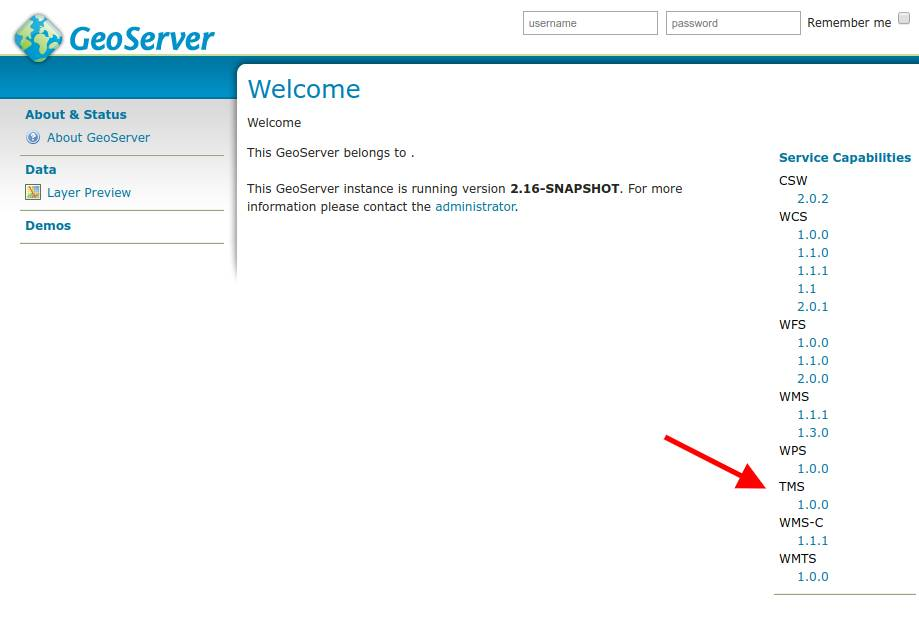
TMS 1.1.0 URL from GeoServer
When saved this, the user will be allowed to browse and add to the map the TMS layers provided by the service. MapStore will filter the layers published showing only the tile maps in the current EPSG.
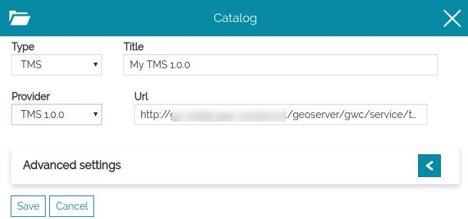
Edit a TMS 1.0.0 provider
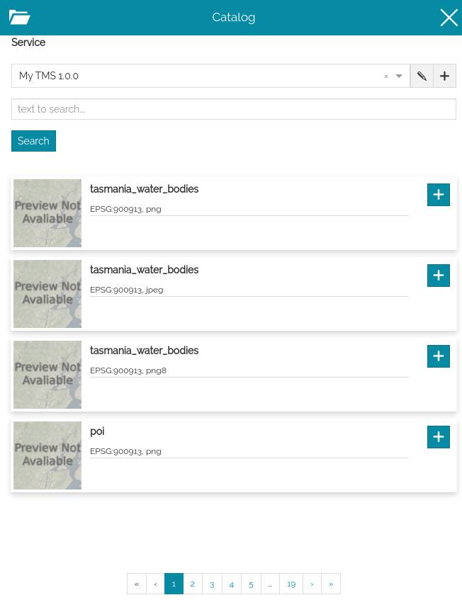
Browse TMS 1.0.0 layers
Sample TMS 1.0.0 services
https://public.sig.rennesmetropole.fr/geowebcache/service/tms/1.0.0
https://osm.geobretagne.fr/gwc01/service/tms/1.0.0
https://gs-stable.geosolutionsgroup.com/geoserver/gwc/service/tms/1.0.0
TMS Known Services
The other known services are listed as providers below "custom" and "TMS 1.0.0". They are a static list configured inside the application. Selecting one of the provider listed and saving the new catalog service allows to browse al the variants known for that service. For more information about the list of available providers, see the developer documentation about Tile Providers
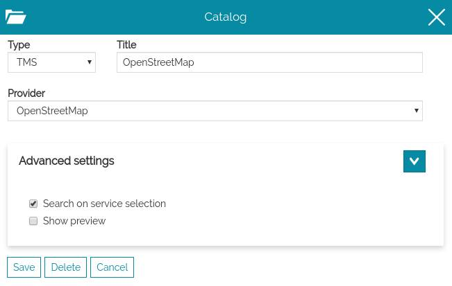
Select a known TMS provider
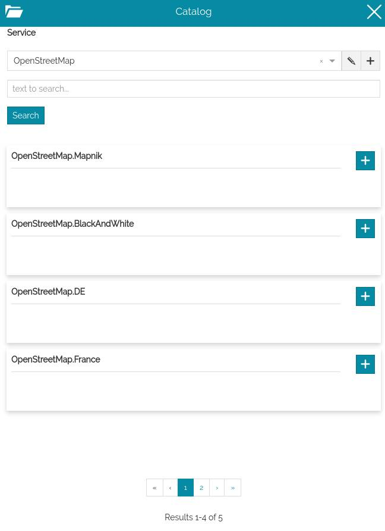
Browse the TMS variants
3D Tiles Catalog
3D Tiles is an OGC specification designed for streaming and rendering massive 3D geospatial content such as Photogrammetry, 3D Buildings, BIM/CAD, and Point Clouds across desktop, web and mobile applications.
MapStore allows to publish 3D Tiles contents in its 3D mode on top of the CesiumJS capabilities. Through the Catalog tool, a specific source type to load 3D Tiles in the Cesium Map can be configured as follows by specifying the URL of a reachable tileset.json.
In General Settings of 3D Tiles service, the user can specify the title to assign to this service and the URL of the service.
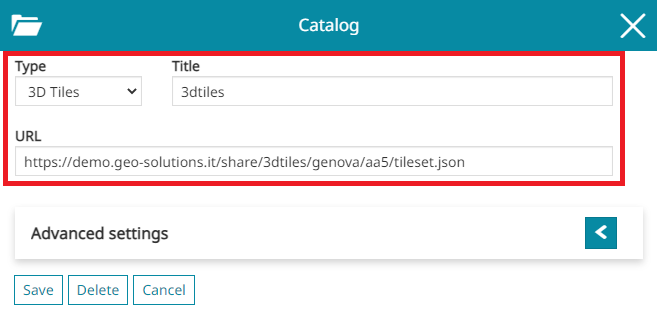
Warning
MapStore allows you to load also Google Photorealistic 3D Tiles and some constraints need to be respected in this case. Since the Google Photorealistic 3D Tiles are not ‘survey-grade’ at this time, the use of certain MapStore tools could be considered derivative and, for this reason, prohibited. Please, make sure you have read the Google conditions of use (some FAQs are also available online for this purpose) before providing Google Photorealistic 3D Tile in your MapStore maps in order to enable only allowed tools (e.g. Measurement and Identify tools should be probably disabled). For this purpose it is possible to appropriately set the configuration of MapStore plugins to exclude tools that could conflict with Google policies. Alternatively, it is possible to use a dedicated application context to show Photorealistic 3D Tiles by including only the permitted tools within it.
Note
The tool capabilities currently available for 3D Tiles layers are:
- Zoom to selected layer extent : in order to zoom the map to the layer's extent
- Access the Layer Settings
 to view/edit the General Information, the Display options and Style
to view/edit the General Information, the Display options and Style - Remove the layer
COG Catalog
A Cloud Optimized GeoTIFF (COG) is a regular GeoTIFF file, aimed at being hosted on a HTTP file server, with an internal organization that enables more efficient workflows on the cloud environment. It does this by leveraging the ability of clients issuing HTTP GET range requests to ask for just the parts of a file they need.
MapStore allows to add COG layers (also as a background) through its Catalog tool where a specific source type can be configured as follows by specifying the URL of a reachable COG .tif resource.
In General Settings of a COG source type, it is possible to specify the service Title and its URL.
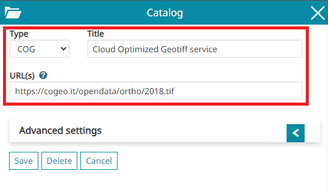
Note
To properly display COG layers in your MapStore map, it is necessary to add the reference system definition supported by the COG in the MapStore projectionDefs configuration
Warning
The COG catalog type in MapStore is still in experimental state and for this reason not directly available in the default service types list of the Catalog tool.
In order to enable this service, update the default Catalog tool configuration in localConfig.json or inside the application context wizard as shown below:
{
"name": "MetadataExplorer",
"cfg": {
...
serviceTypes: [
...
+ { name: "cog", label: "COG" }
]
}
}
Advanced Settings
In addition to the standard options, only for COG catalog sources, through the Advanced Settings the user can configure also the following option:
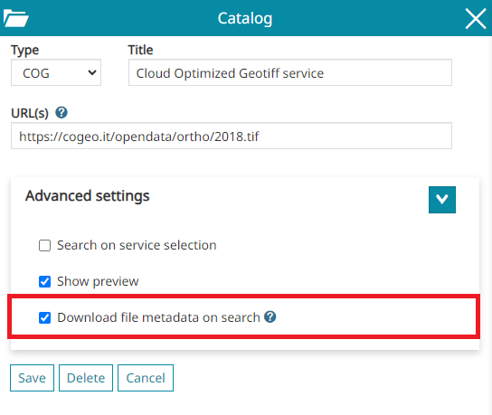
- Download file metadata on search: this option will fetch metadata to support the zoom to layer when the layer is added to the TOC.
Note
The tool capabilities currently available for COG layers are:
- Zoom to selected layer extent : in order to zoom the map to the layer's extent
- Access the Layer Settings to view/edit the General Information, the Display options and the Style
- Remove the layer
IFC Model Catalog
An Industry Foundation Classes (or IFC) is a 3D model file created to provide a standardized, digital description of the built asset industry. MapStore allows to add IFC model through its Catalog tool where a specific source type can be configured as follows by specifying the URL of a reachable .ifc resource on the web.
In General Settings of a IFC source type, it is possible to specify the service Title and its URL.
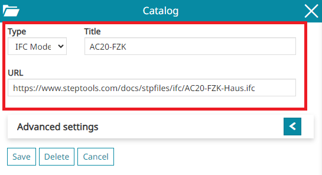
Note
To properly display georeferenced IFC 3D model layers in MapStore, ensure to have its coordinate reference system definition defined in the MapStore projectionDefs configuration. Non-georeferenced IFC models are added by default in the center of the map viewport.
Note
The tool capabilities currently available for IFC model layers are:
- Zoom to selected layer extent : in order to zoom the map to the layer's extent
- Access the Layer Settings to view/edit the General Information and the Display options
- Remove the layer
ArcGIS Catalog
An ArcGIS Server Services Directory is a RESTful representation of all the services running on an ArcGIS Server site. MapStore allows adding ArcGIS Map Service and Image Service types through its Catalog tool where a specific source type can be configured.
In General Settings of a ArcGIS source type, it is possible to specify the service Title and its URL.
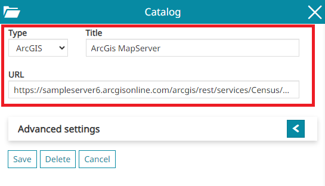
Warning
The URL could have one of the following structures:
-
https://<catalog-url>/rest/services/ -
https://<catalog-url>/rest/services/<serviceName>/MapServer -
https://<catalog-url>/rest/services/<serviceName>/ImageServer
Note
The tool capabilities currently available for layers come from ArcGIS service are:
- Zoom to selected layer extent : in order to zoom the map to the layer's extent
- Access the Layer Settings to view/edit the General Information and the Display options
- Remove the layer